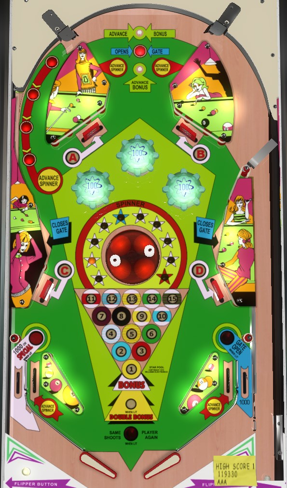

Almost nothing other than end of ball bonus scores meaningful points on Star Pool. Repeatedly shoot to the top of the table via either orbit shot to collect bonus advances and spinner advances along the way. The left orbit rollover buttons each score 1 spinner advance: the in lanes and upper rebound switches score 3 advances, and 5 total advances increases the bonus. You also want to go back to the top of the table to collect A-B-C-D drop targets, which award double bonus the first time and light extra ball the second time. Once bonus is maxed and doubled, keep shooting up top and hope stay in the bumpers for a while.
Always fully plunge the ball on Star Pool. The top funnel of the playfield consists of 3 rollover buttons in a vertical line and switches within the walls that form a funnel shape. The upper and lower rollover buttons score 100 points and a bonus advance. The center rollover button scores 10 points and opens the right out lane gate. The wall switches score 30 points and 3 spinner advances.
Pop bumpers always score 100 points.
Each target down scores 100 points and a bonus advance. Completing all 4 targets resets them, and also awards double bonus for the first completion and extra ball for the second completion. If the game is set to replay mode, completing A-B-C-D twice also lights the left out lane for a Special: in add-a-ball mode, the second A-B-C-D will only award the extra ball, and you need to max the base bonus at 15,000 points ot light the left out lane special instead.
The "spinner" is not a traditional spinning target: it is a rotating disk with two posts sticking out of it. Shooting the ball at one of these posts causes the rotating disk to spin in either direction. Similar structures are seen on Triple Action/Star Action (Williams, 1973), or the magic lamp on Tales of the Arabian Nights (Bally Williams, 1996). At certain points in the disk's rotation, one spinner advance is registered, which scores 10 points and one spinner advance. Every 5th spinner advance, as indicated by the blue and red stars around the spinning disk, will advance the end of ball bonus.
The spinner is very risky to shoot at directly, so have your spinner advances be spotted for you instead. The four rollover buttons in the left orbit lane each score 10 points and one spinner advance; the in lanes score 30 points and 3 spinner advances; and the wall switches on either side of the top funnel of the game also each score 30 points and 3 spinner advances.
Star Pool has a conventional in/out lane setup. In lanes score 30 points and 3 spinner advances. Out lanes score 1,000 points.
There is a gate in the right out lane that redirects the ball back to the shooter lane when opened. This gate is opened by pressing the center top rollover button, and it closes when it is used or when one of the wall switches about halfway up the table, just above the C and D drop targets, is registered.
The left out lane can be lit for Special: if the game is set to replay mode, the special is lit when A-B-C-D is completed twice in one ball, and the special will award a free game. If the game is set to add-a-ball mode, the special will award an extra ball instead, and it will be lit when the base bonus is maxed out at 15,000 points.
Bonus is advanced by every 5 spinner advances, any drop target, or the Advance Bonus top rollover buttons. Bonus is doubled by completing A-B-C-D once. Double bonus is never given for free. Max bonus is 2x 15,000 = 30,000 points. Bonus is an absolutely massive component of scoring; a ball that builds the maximum possible 30,000 points in bonus will likely only score 5,000 points or less from the playfield itself in the meantime. Absolutely do not tilt any ball on Star Pool, even if you're trying to avoid a house ball and you only have the base 1,000 points in your bonus.
To my knowledge, there is no way to set extra balls or specials to have a point value in competition/novelty play. If the game is set to add-a-ball mode, surpassing the preset replay scores will instantly award the player an extra ball. Maximum one extra ball per ball in play.